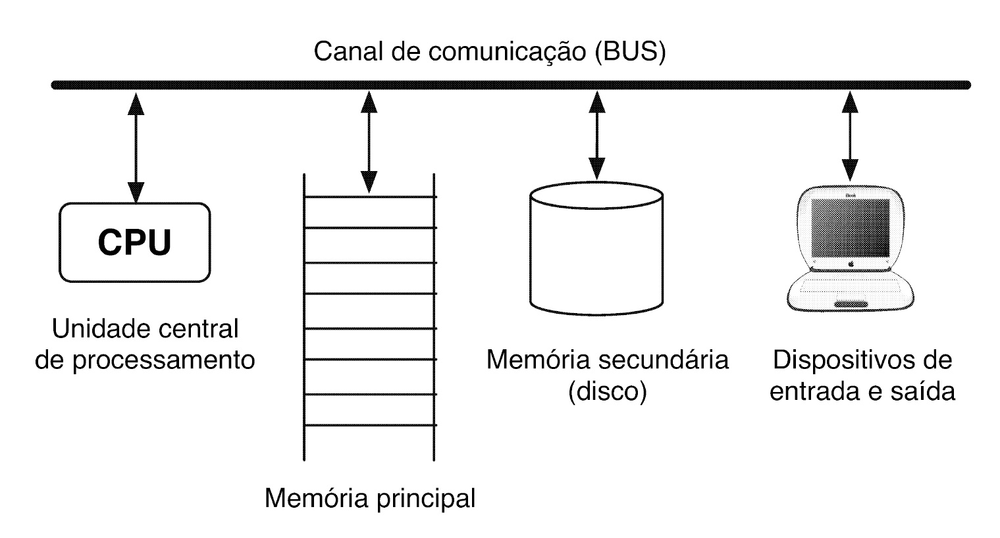

Primeiros programas em C
Como um programa nasce, compila e roda — os tipos e operadores que ele manipula, e como ele toma decisões.
O que vamos ver
- 01O que é programaro computador, o ciclo de desenvolvimento, a compilação
- 02Estrutura de um programa em Co esqueleto que todo programa segue
- 03Variáveis e tiposonde os dados moram na memória e quanto espaço ocupam
- 04Operadorescomo transformar e comparar valores
- 05Entrada e saídacomo conversar com quem usa o programa
- 06Condicionaiscomo o programa escolhe o que fazer com if e switch
Um computador processa dados através de instruções
CPU, memória principal, memória secundária e dispositivos de E/S — tudo ligado por um barramento comum.

Programar é escrever uma sequência de instruções
Cada instrução é executada em ordem, para produzir o resultado esperado a partir dos dados de entrada.
Editar, compilar, testar — em ciclo
Um erro de compilação ou de execução manda de volta para o editor.

Compilar tem três sub-etapas
Pré-processamento resolve #include/#define; a compilação traduz para código objeto; a linkagem junta as bibliotecas usadas.
Um erro de execução (o programa roda, mas produz um resultado errado) é sinalizado pelo compilador da mesma forma que um erro de sintaxe.
O compilador só detecta erros de sintaxe (erros de compilação); um erro de execução passa despercebido por ele — só aparece quando se compara a saída do programa com o resultado esperado.
A mesma anatomia, sempre
Todo programa em C segue este esqueleto.
traz as declarações de uma biblioteca (ex.: stdio.h)
ponto de entrada obrigatório — é daqui que a execução começa
delimitam o corpo: comandos executados em ordem, de cima a baixo
encerra a função e devolve um status ao sistema operacional
comentários documentam o código — o compilador os ignora por completo
Um exemplo com #include, #define e comentários
printf escreve na tela, scanf lê o que o usuário digita — os dois voltam em detalhe mais adiante.
#include <stdio.h>
#define IDADE_ADULTA 18 /* apelido para 18 */
int main()
{
int idade; // idade lida
int limite = IDADE_ADULTA; // vira "= 18;"
printf("Digite sua idade: ");
scanf("%d", &idade);
printf("Voce tem %d anos.\n", idade);
return 0;
}#include e #define acontecem antes da compilação
Diretivas de pré-processador: começam com # e são resolvidas antes de qualquer código ser traduzido.
traz as declarações de printf e scanf, usadas duas linhas abaixo no exemplo anterior
cria um apelido de texto — limite = IDADE_ADULTA; vira limite = 18; antes de compilar
Um comando revela os arquivos por trás da compilação
gcc --save-temps preserva os arquivos intermediários que normalmente são apagados sozinhos.
$ gcc --save-temps main.c -o program
$ ls
main.c program program-main.i program-main.o program-main.sEm cada arquivo, uma tradução do mesmo código
program-main.i → program-main.s → program-main.o/./program: cada um é uma versão mais próxima da máquina.
/* ...milhares de linhas de stdio.h expandidas aqui... */
int main()
{
int age;
printf("How old are you?: ");
scanf("%d", &age);
return 0;
}call __isoc99_scanf@PLT
...
call printf@PLT
...
retbinário — já não é texto legívelComentários (/* ... */ ou //) podem ser removidos do código-fonte sem alterar em nada o comportamento do programa compilado.
Comentários são pura documentação, ignorados pelo compilador — removê-los do código-fonte não muda em nada o programa compilado, só a legibilidade para quem lê o código.
Uma variável é um espaço nomeado na memória
Guarda um valor de um tipo específico — e esse valor pode mudar ao longo da execução do programa.
Cada tipo ocupa um número fixo de bytes
char, int, float, double e void — cada um com seu tamanho na memória.
Toda variável precisa ser declarada antes de usada
A forma geral é tipo nome; — e dá para inicializar no mesmo passo.
declaração simples
várias do mesmo tipo, com vírgula
declarar e já inicializar
int age;
printf("How old are you?: ");
scanf("%d", &age);Constantes são valores fixos no código
Cada notação diz ao compilador que tipo de constante é aquela.
inteira
ponto flutuante
caractere
string
hexadecimal
octal
Declarar não é inicializar
Sem atribuição explícita, uma variável recém-declarada guarda "lixo de memória" — e o compilador pode avisar.
int nao_inicializada;
printf("%d\n", nao_inicializada);
// gcc -Wall avisa:
// warning: 'nao_inicializada'
// is used uninitializedEm C, uma variável recém-declarada, sem inicialização explícita, sempre começa automaticamente com o valor zero.
Ao contrário do que se poderia esperar, o C não zera automaticamente uma variável recém-declarada — seu valor inicial é indefinido, o que estiver por acaso naquele endereço de memória.
Nem toda divisão sobra decimais
O tipo dos operandos decide se o resultado trunca — o cast explícito força a conversão.
7 / 2
Os dois operandos são int — divisão inteira, trunca.
37.0 / 2
Um operando é ponto flutuante — preserva as casas decimais.
3.5// os dois sao int: trunca
float media_errada =
total_pontos / quantidade_provas;
// (float) antes da divisao:
float media_certa =
(float) total_pontos / quantidade_provas;Atribuição composta combina operação e atribuição
x += 3; equivale a x = x + 3; — mesmo padrão para -=, *=, /= e %=.
int x = 10;
x += 3; // x = x + 3 → 13
x -= 2; // x = x - 2 → 11
x *= 4; // x = x * 4 → 44
x /= 4; // x = x / 4 → 11 (int!)++x e x++ não são a mesma coisa
A diferença aparece quando o operador está dentro de uma expressão maior.
x++
Usa o valor atual — o incremento acontece depois.
usa 5, x vira 6++x
Incrementa primeiro — a expressão já usa o novo valor.
x vira 7, usa 7int resultado_pos = x++;
// resultado_pos = 5, x agora = 6
int resultado_pre = ++x;
// x agora = 7, resultado_pre = 7&&, || e ! combinam expressões booleanas
Curto-circuito: para assim que o resultado já está decidido — e o resultado (0/1) é um int comum, C não tem tipo booleano.
verdadeiro só se os dois lados forem verdadeiros
verdadeiro se pelo menos um lado for
inverte um valor lógico
int elegivel =
maior_de_idade && renda_baixa;sizeof consulta o tamanho em tempo de compilação
Funciona para qualquer tipo ou variável — e o resultado pode variar entre plataformas.
tamanho de um tipo
tamanho de uma variável
printf("Size of int: %lu bytes\n",
sizeof(int));
printf("Size of double: %lu bytes\n",
sizeof(double));Ler como double já evita a divisão inteira
Quando os dois operandos já nascem de ponto flutuante, a conversão implícita nem precisa de cast.
double num1, num2, result;
scanf("%lf", &num1);
scanf("%lf", &num2);
result = num1 / num2; // já com decimaisNa expressão (float)a / b, mesmo que b continue sendo int, a divisão inteira nunca chega a acontecer, porque um dos operandos (a, já convertido) é float.
Basta um operando de ponto flutuante para a divisão deixar de ser inteira — como o cast converte a para float antes da divisão, b continuar int não importa: o resultado já sai com casas decimais.
printf(formato, valores...) — um especificador por valor
Cada % no texto de formato é um placeholder, preenchido pelo valor correspondente na mesma ordem.
inteiro
ponto flutuante
caractere
string
int idade = 20;
float altura = 1.75;
printf("%d anos, %f m\n", idade, altura);$ ./exemplo
20 anos, 1.750000 mprintf também controla a largura
%4d e %7.2f reservam um número mínimo de posições, alinhadas à direita.

printf("[%4d]\n", 23);
printf("[%7.2f]\n", 5.3);$ ./exemplo
[ 23]
[ 5.30]scanf sempre pede o endereço
Sem o &, scanf não sabe onde guardar o valor lido. Esse endereço é um ponteiro — tipo com regras próprias, que veremos mais adiante no curso.
int idade;
printf("Digite sua idade: ");
scanf("%d", &idade);
printf("Voce tem %d anos.\n", idade);$ ./exemplo
Digite sua idade: 20
Voce tem 20 anos.Assim como printf, scanf recebe o valor da variável diretamente, sem precisar do operador &.
Ao contrário de printf, scanf sempre precisa do endereço da variável, não do seu valor — por isso é quase sempre chamado com & antes do nome da variável.
if executa um bloco só quando a condição é verdadeira
O else, opcional, executa um bloco alternativo quando ela é falsa.
if (celsius < 0)
printf("It's freezing outside!\n");
else
printf("It's not freezing outside.\n");C não tem um tipo booleano
Qualquer expressão numérica pode ser usada como condição de um if — para tipos primitivos, a regra é sempre esta.
0
Tratado como falso — o bloco do if não executa.
if (0) → não executa≠ 0
Qualquer valor diferente de zero é tratado como verdadeiro.
if (5) → executaChaves agrupam comandos num bloco só
Opcionais para um único comando — mas usá-las sempre evita um erro comum.
if (nota >= 7)
{
printf("Aprovado\n");
total_aprovados++;
}if (nota >= 7)
printf("Aprovado\n");
total_aprovados++; // roda sempre!O operador ?: escolhe um valor sem if-else
condição ? valor_se_verdadeiro : valor_se_falso — substitui um if-else de quatro linhas por uma expressão.
int maior = (a > b) ? a : b;switch testa em cascata, até bater
Sem break, a execução "cai" para o case seguinte (fall-through).
switch (operator)
{
case '+': result = num1 + num2; break;
case '/': result = num1 / num2; break;
default: printf("Error\n");
}Sem um break no final do case, o switch para automaticamente ali, sem executar o case seguinte.
É o contrário: sem break, a execução não para — ela "cai" para o case seguinte (fall-through) mesmo que a condição dele não bata, um comportamento às vezes proposital, mas fonte comum de bugs quando esquecido.
Explore os exemplos, no seu ritmo
Código-fonte, explicação linha a linha e simulação da execução passo a passo — sem precisar compilar nada. Depois, teste o que aprendeu no quiz.